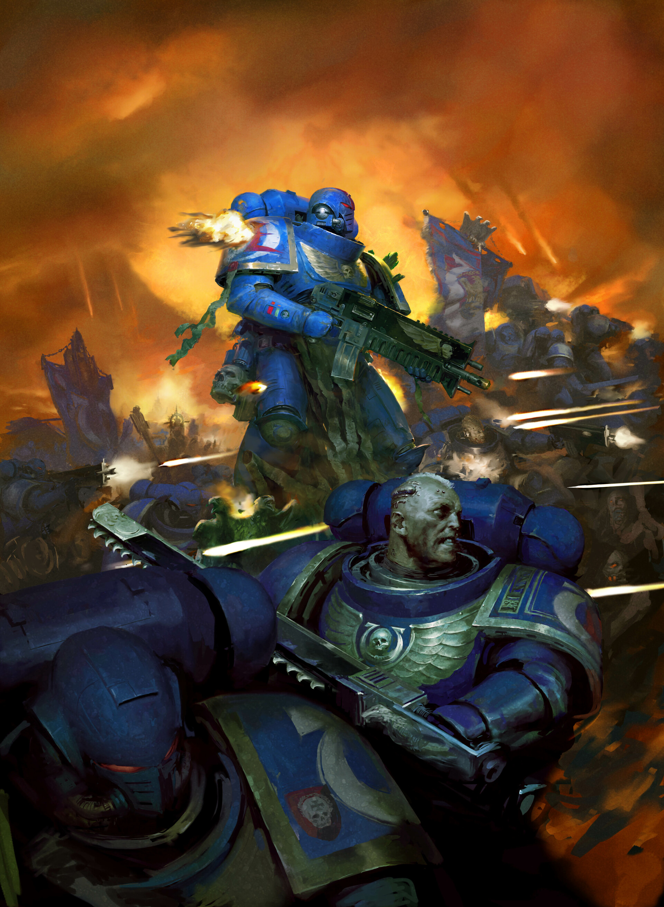
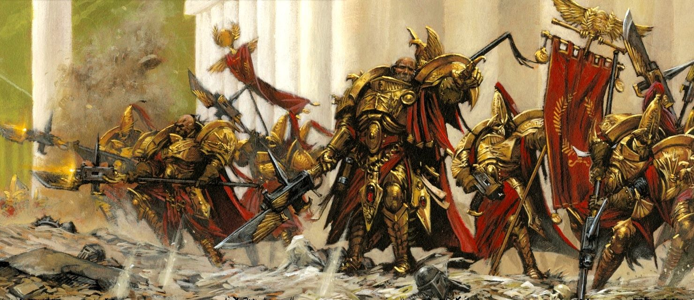
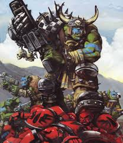

How to Build Your Warhammer 40K Army
Building a Warhammer 40K army is an exciting journey! Follow these steps to create your perfect army:
Choosing your faction
Choosing a faction can be a tough choice, especially because of the investment needed to make it yours, but it is well worth the effor
Popular factions
Space Marines

Space Marines are the elite warriors of the Imperium, known for their resilience and versatility. The poster boys of Warhammer 40k, a great start for beginners with easy painting, and great level of utility and power. A great starting point for this and for most factions would be getting the Combat Patrol set, and some 100% necessary colours would be macragge blue and Mephiston red! And to layer it off with nuln oil.
Adeptus Custodes

Adeptus Custodes are the Emperor's personal guard, known for their elite status and powerful abilities. They are a great choice for players who want to play a small but elite army, with a lot of power behind them. With the combat patrol, keep a look out for a minor part of the custodes: the sisters of silence! There may not be many, but they are definitely a strength for your army. some good paints to start with would be the Retributor armour, Mephiston red, and Abaddon black
Orks

Orks are a fun and chaotic faction, known for their unique style and humor. They are a great choice for players who want to play a fun and unpredictable army, with a lot of character and personality. Though very expensive as they need more pieces to meet game standards, they more than make up for it with their simplistic appeal and intelligence. A great starting point to paint would be to start with Waaagh! Flesh, Averland Sunset, and a coat of nuln oil